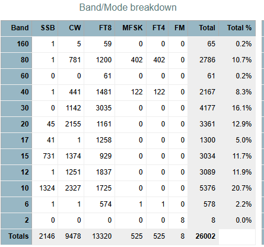

Al
Ft4 is a sub mode of mfsk
For adif std
mode. Sub modes
| MFSK | FSQCALL, FST4, FST4W, FT4, JS8, JTMS, MFSK4, MFSK8, MFSK11, MFSK16, MFSK22, MFSK31, MFSK32, MFSK64, MFSK64L, MFSK128 MFSK128L, Q65 |
Clay
On Sun, Jan 25, 2026 at
12:07 PM Al N6TA via Chat <chat@ncdxc.org>
wrote:
I was recently asked about working the KP5 on MFSK. Their log stats showed this:_______________________________________________
My answer was to just work them on FT4.Today, they (Clublog?) no longer shows MFSK as a mode:
Does anyone understand why MFSK would ever be shown and why it appears as FT4 when it is not really a specific mode itself? FT8 is also MFSK, I believe.Curious only.Al N6TA
Chat mailing list
Chat@ncdxc.org
http://mail.ncdxc.org/mailman/listinfo/chat_ncdxc.org

_______________________________________________ Chat mailing list Chat@ncdxc.org http://mail.ncdxc.org/mailman/listinfo/chat_ncdxc.org